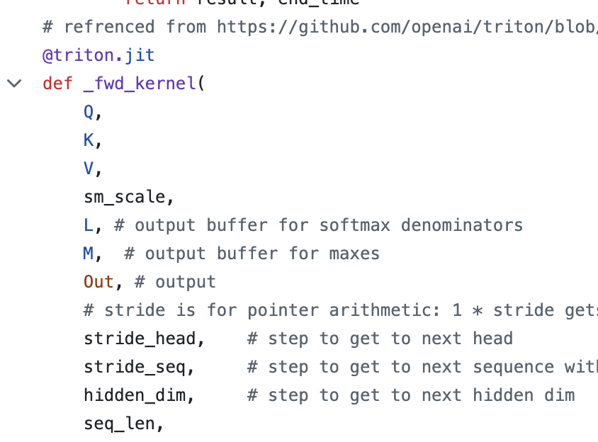

This is an excerpt from my final project for Systems for Machine Learning, where myself and a couple buddies understood the implementation and re-implemented an efficient attention algorithm called FlashAttention. I started working with the professor from this course on my senior thesis in this rapidly developing field of systems for machine learning, hoping to take these skills and apply them broadly.
This image shows part of my a limit supremum proof for my real analysis course. I think the idea of limit supremum is pretty representative of what I took from that course. Limit supremum certainly sounds fancy, like a spell or something, and the initial definition can seem really confusing. However, the actual main purpose for this concept isn't complicated. This was the first math class where I felt myself breaking through the rigor to get at the broader goal of what we are proving, though still using rigor to prove things correctly.